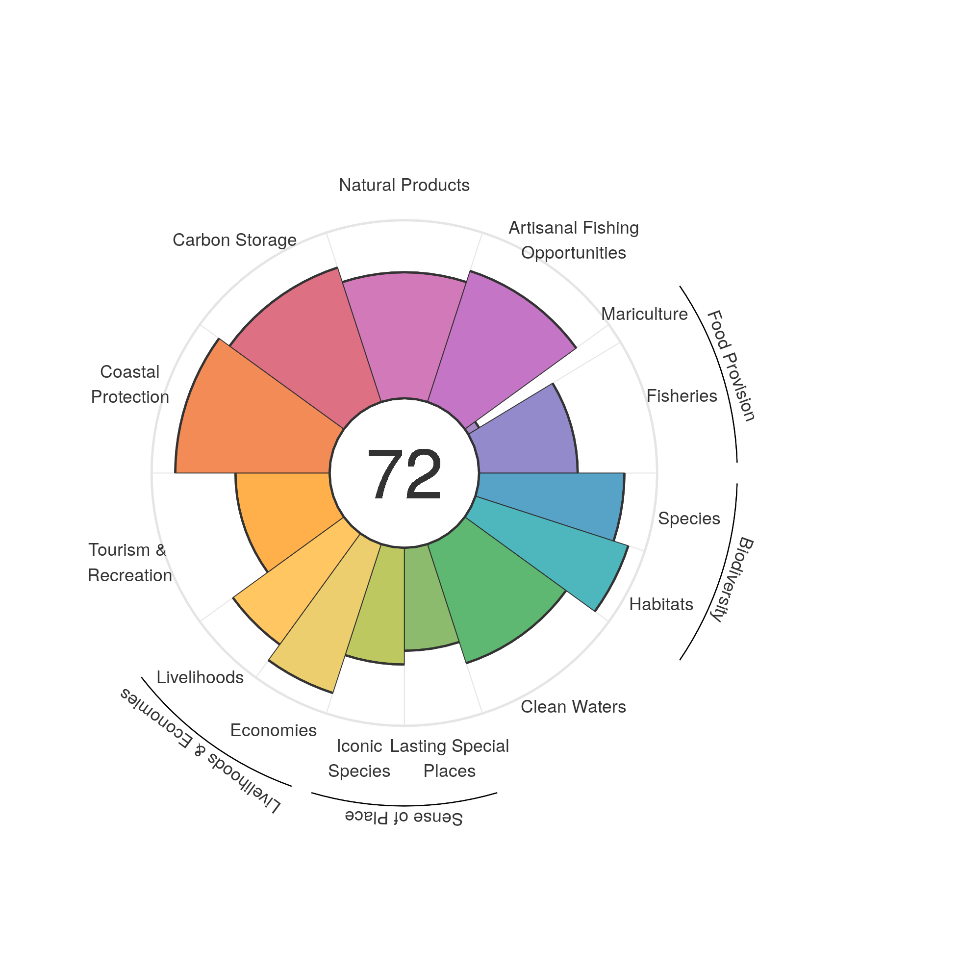

Annual OHI global assessments
Ocean Health Index scores provide invaluable, comprehensive, and quantitative assessments of progress towards healthy and sustainable oceans. Such assessments are particularly valuable when repeated annually. 2018 marks the seventh year of annual global Ocean Health Index (OHI) assessments, with scores representing ocean health for 220 coastal nations and territories. For detailed description of our up-to-date data and methods, see the Supplemental Information. And visit our Story Map!

The average 2018 Index score was 70 out of 100. Average Index scores have not dramatically changed over seven years, which could be expected at a global scale. However, some individual goals and regions have had significant changes.
The OHI framework has not changed since its inception in 2012 (Halpern et al. 2012). We continue to assess ocean health based on the sustainable delivery of a suite of goals that are important to humans. We score each goal on a scale of 0-100 based on current status, trend, and external pressures and resilience measures. Scores are calculated for each coastal nation before being combined together. However, the OHI benefits from constant evaluation and improvement aimed at incorporating new knowledge, data and understanding, and underlying methods for some goals have been upgraded. When upgrades occur, we back-calculate previous years so that all scores are comparable.
For the fifth assessment in 2016, we also explored trends and trajectories in ocean health:
For further details, see Halpern et al. 2015, Halpern et al. 2017, Lowndes et al. 2015, and Lowndes et al. 2017.